Use the coordinate plane. State the coordinates of points A and C.
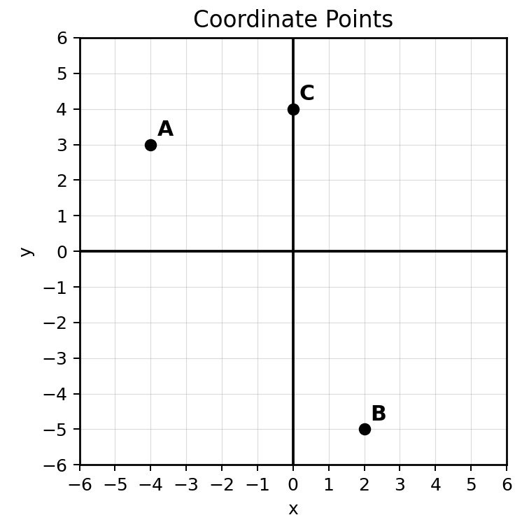
Evaluate the function rule for each input.
$$f(x)=2x+3$$
| $x$ | -1 | 0 | 4 |
|---|---|---|---|
| $f(x)$ |
Determine whether Relation S is a function. Explain using inputs and outputs.
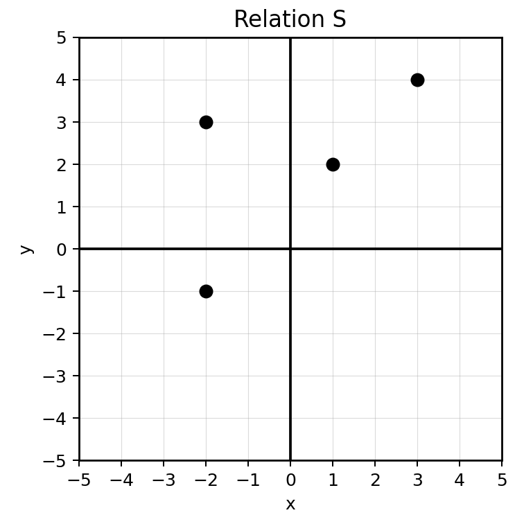
Identify the function family shown in the graph and give one visible feature.
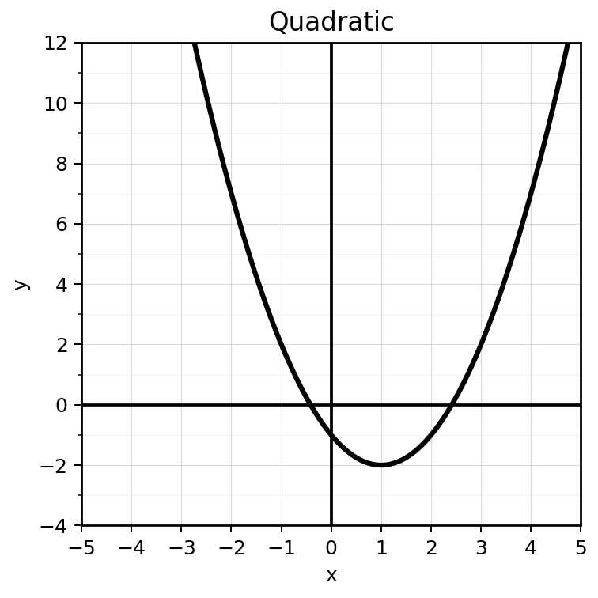
Simplify the expression and identify the terms that were combined.
$$5x+3+2x-1$$
A gym charges $20$ dollars to join and $15$ dollars each month. Write and solve an equation for a total cost of $80$ dollars.
Use the distance-time graph. What are the input and output quantities? Interpret the point at time $4$.
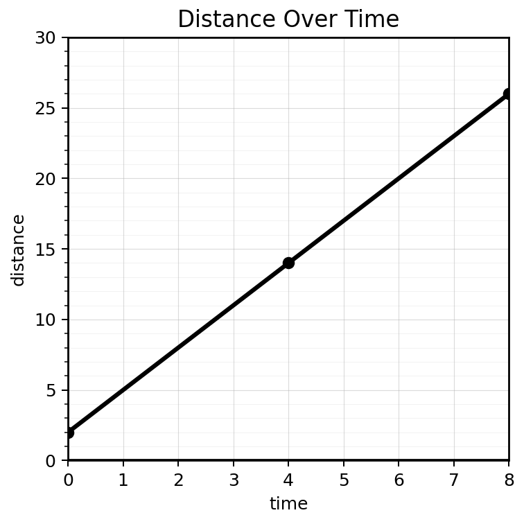
A student claims the table matches $y=2x+1$. Determine whether the student is correct and justify with evidence.
| $x$ | 0 | 1 | 2 | 3 |
|---|---|---|---|---|
| $y$ | 1 | 2 | 5 | 7 |
Compare a linear graph and an exponential graph. Describe one difference in how their outputs change.
A student solves $4x+12=40$ and says the answer means “$7$ dollars.” Critique the interpretation and explain what information is needed.
Use the coordinate plane. State the coordinates of points B and C.
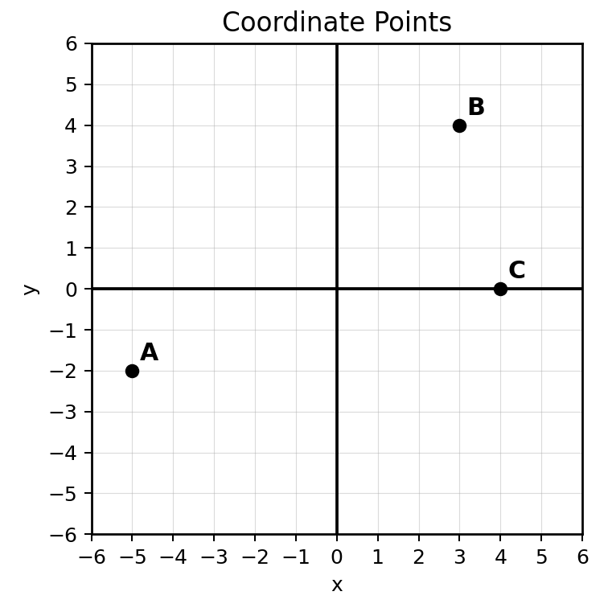
Evaluate the function rule for each input.
$$g(x)=3x-2$$
| $x$ | -2 | 1 | 5 |
|---|---|---|---|
| $g(x)$ |
Determine whether Relation R is a function. Explain using inputs and outputs.
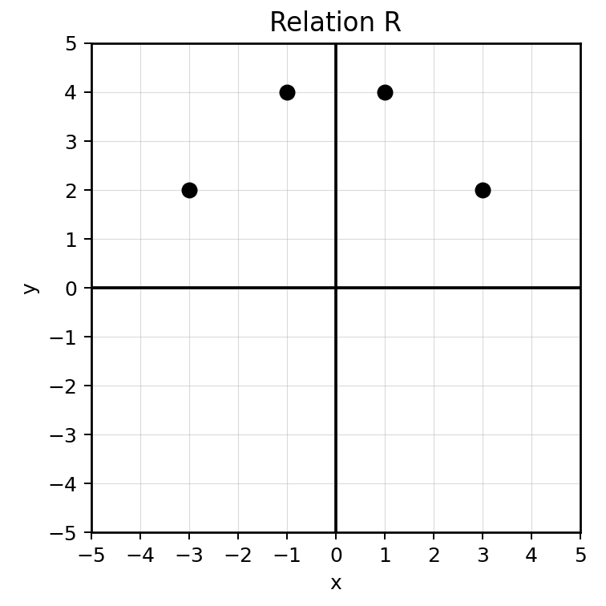
Identify the function family shown in the graph and give one visible feature.
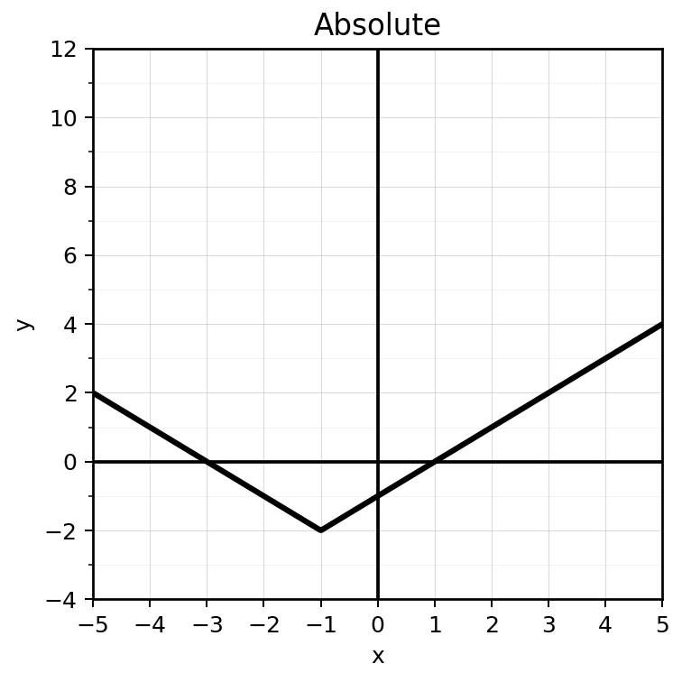
Use the distributive property to rewrite the expression. Then explain what changed.
$$4(x+6)$$
A club charges $12$ dollars to register and $4$ dollars per visit. Write and solve an equation for a total cost of $36$ dollars.
Use the ticket-cost graph. What is the starting cost, and what does it mean?
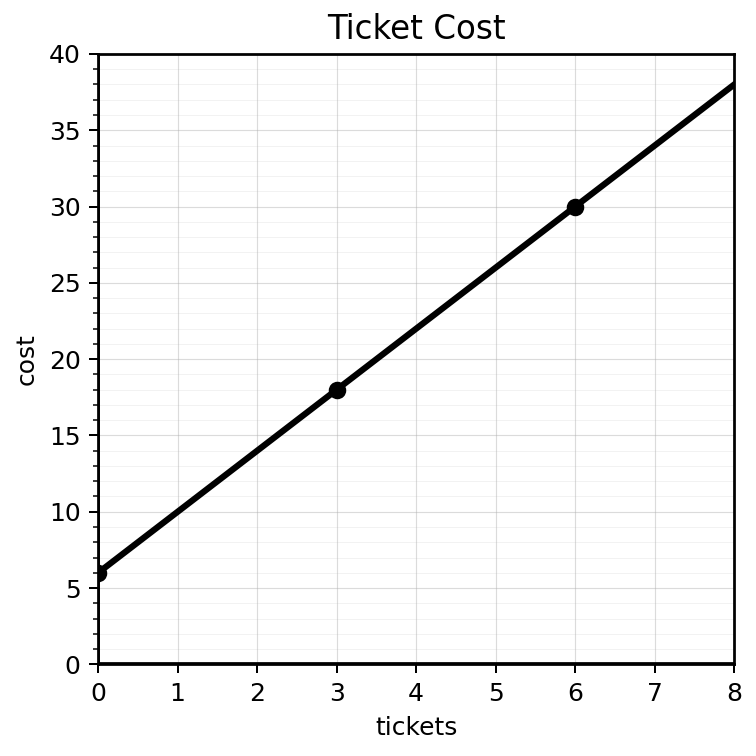
Determine whether the context matches $y=3x+5$: “A delivery costs $5$ dollars plus $3$ dollars per mile.” Justify your answer.
Compare a quadratic graph and an absolute value graph. Describe one similarity and one difference in shape.
A student simplifies $3x+4+2x$ as $9x$. Analyze the error and write a corrected expression.
Use the coordinate plane. State the coordinates of points A and B.
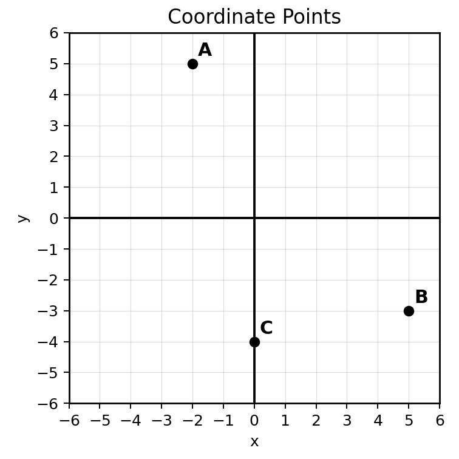
Evaluate the function rule for each input.
$$h(x)=x^2+1$$
| $x$ | -3 | 0 | 4 |
|---|---|---|---|
| $h(x)$ |
Create one example of a relation that is not a function. Explain the issue with inputs and outputs.
Identify the function family shown in the graph and give one visible feature.
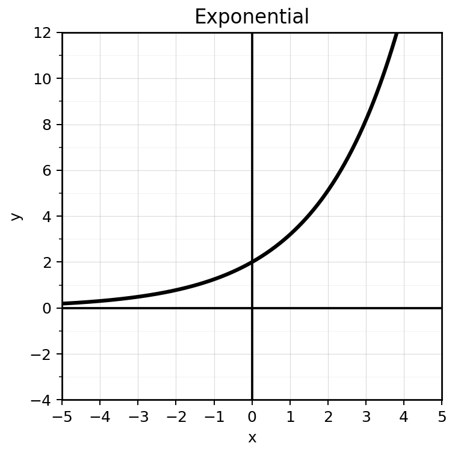
Determine whether $3(x+2)$ and $3x+6$ are equivalent. Use substitution with $x=5$ to check.
A taxi charges $6$ dollars to start and $2$ dollars per mile. Write and solve an equation for a total cost of $24$ dollars.
Use the graph to complete a table with three ordered pairs from the line.
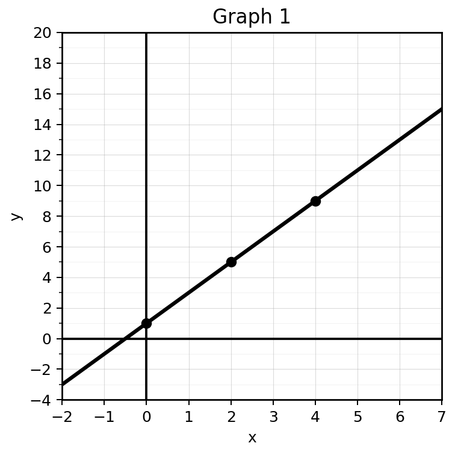
The equation $y=4x$ is used for a cost situation. Create a possible context and explain what $x$ and $y$ represent.
Use a table of values to explain why $y=2x+1$ behaves differently from $y=x^2+1$.
A student says an equation model only gives an answer, not meaning. Respond using a real-world example.
Use the coordinate plane. State the coordinates of points B and C.
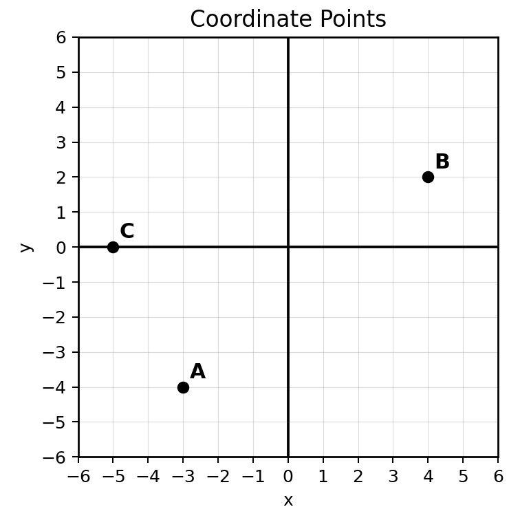
Evaluate the function rule for each input.
$$p(x)=5x-4$$
| $x$ | 0 | 2 | 6 |
|---|---|---|---|
| $p(x)$ |
A table has input $2$ paired with output $5$ and input $2$ paired with output $9$. Explain whether the relation is a function.
Identify the function family shown in the graph and give one visible feature.
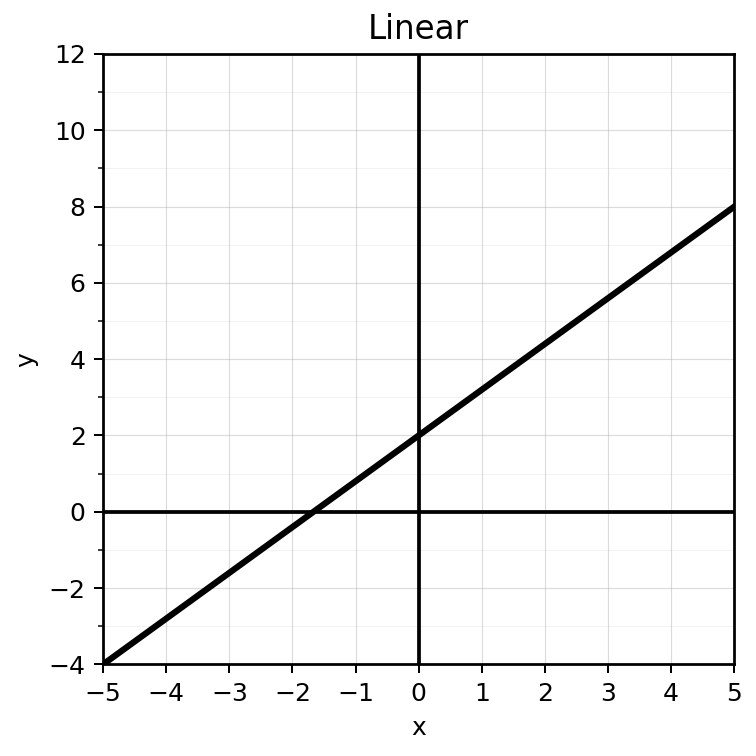
Simplify the expression and identify the structure used.
$$6n-2+4n+9$$
A school sells tickets for $5$ dollars each plus a $10$ dollar setup fee. Write an equation for total cost $C$ for $t$ tickets, then find the cost for $8$ tickets.
Use the graph. Write a sentence describing how the output changes as the input increases.
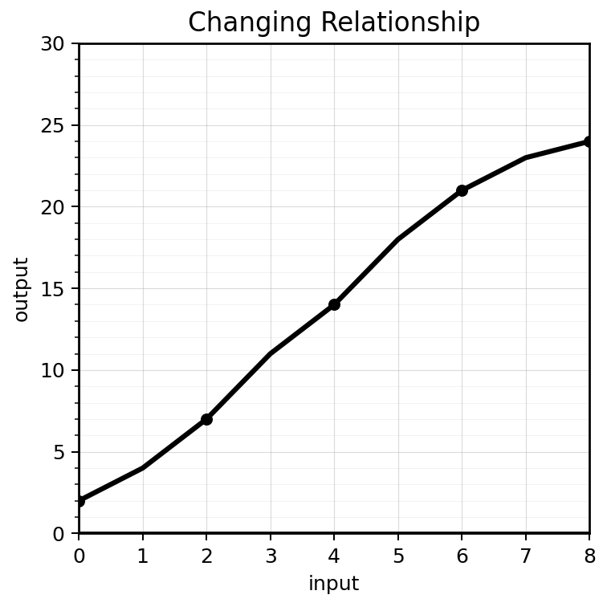
Determine whether the equation $y=3x+2$ matches the table. Justify with at least two points.
| $x$ | 0 | 1 | 2 | 3 |
|---|---|---|---|---|
| $y$ | 2 | 5 | 8 | 11 |
A student claims $y=x^2+3$ is linear because the equation has an $x$. Explain the misconception and correct it.
Use the two-plan graph. Which plan is cheaper at first? Which plan becomes cheaper later? Justify using graph features.
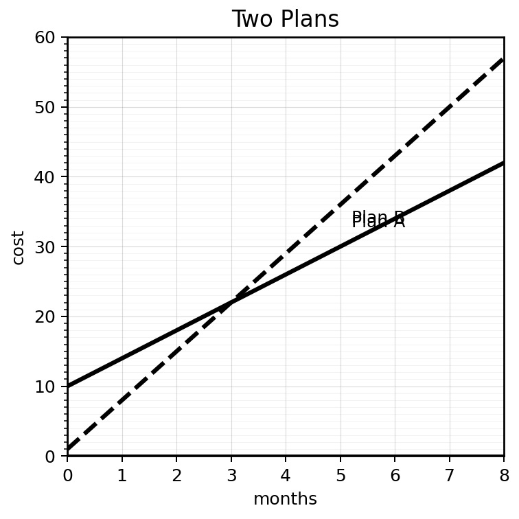
Use the coordinate plane. State the coordinates of points A and C.
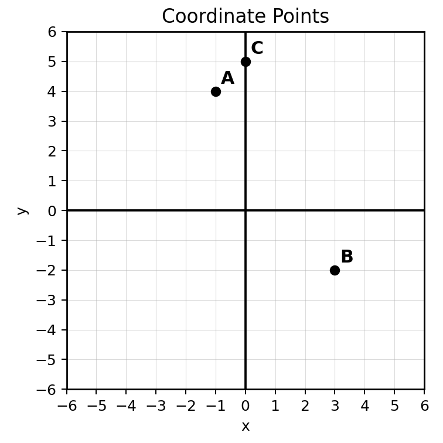
Evaluate the function rule for each input.
$$q(x)=2x+7$$
| $x$ | -1 | 3 | 8 |
|---|---|---|---|
| $q(x)$ |
Explain why repeated outputs do not automatically mean a relation is not a function.
Identify the function family shown in the graph and give one visible feature.
Explain why $5x+2$ and $5(x+2)$ are not equivalent, even though both contain $5$, $x$, and $2$.
A repair service charges $25$ dollars plus $30$ dollars per hour. Write and solve an equation for a total cost of $145$ dollars.
Use the ticket-cost graph to write a possible equation for total cost $C$ in terms of tickets $t$.
A table, equation, and context all represent the same relationship. Describe two pieces of evidence that would convince you they match.
Explain why recognizing a function family can help you predict graph behavior before graphing exact points.
Use the two-plan graph. Which plan is less expensive at $2$ months and which is less expensive at $7$ months?
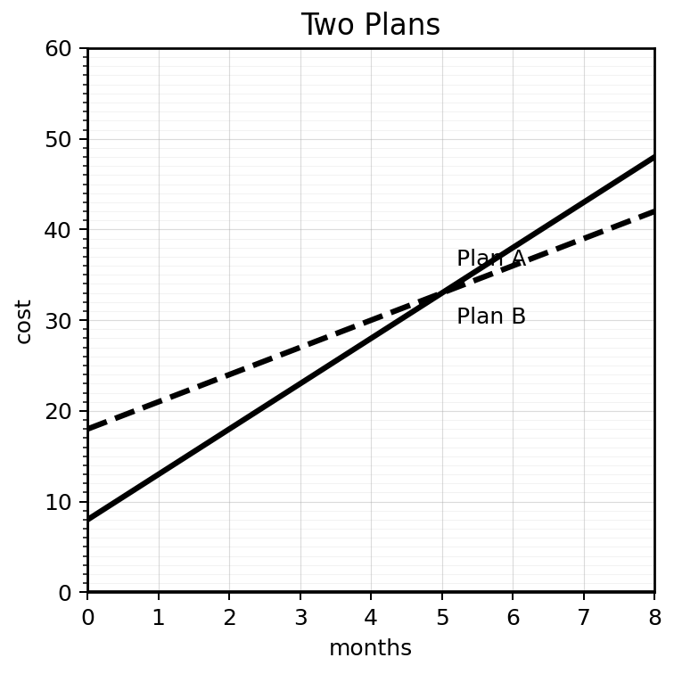
Use the coordinate plane. State the coordinates of points A and B.
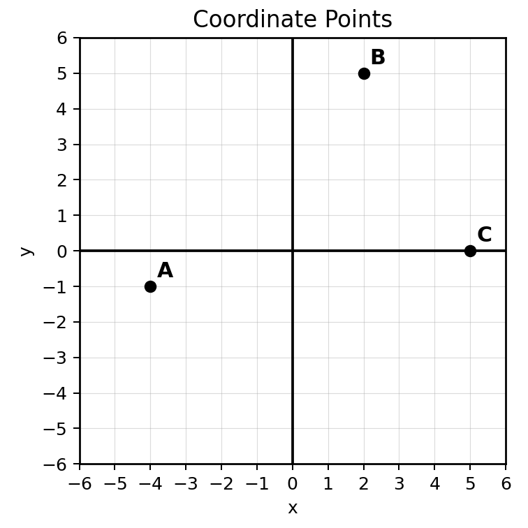
Evaluate the function rule for each input.
$$r(x)=x^2-2$$
| $x$ | -2 | 1 | 5 |
|---|---|---|---|
| $r(x)$ |
Determine whether Relation S is a function. Then describe one change that would make it a function.
Identify the function family shown in the graph and give one visible feature.
Compare simplifying first versus substituting first for $2(x+3)+4$ when $x=5$. Which method is more efficient and why?
A streaming plan charges $9$ dollars per month plus a one-time $18$ dollar fee. Write and solve an equation for a total cost of $72$ dollars.
Graph the points from the table on the grid, then describe the relationship.
| $x$ | 0 | 1 | 2 | 3 |
|---|---|---|---|---|
| $y$ | 1 | 3 | 5 | 7 |
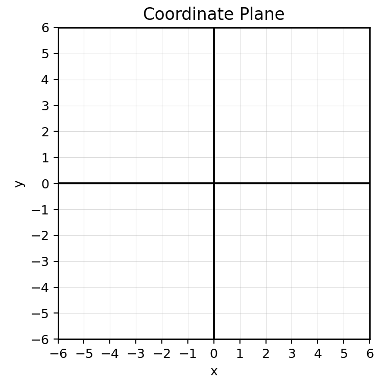
A student says the graph of a relationship matches $y=2x+6$ because the graph has the point $(2,6)$. Critique the reasoning.
Compare an exponential pattern and a linear pattern. How can a table help distinguish them?
Use the two-plan graph to make a recommendation for someone who will keep the plan for $6$ months. Justify with evidence.
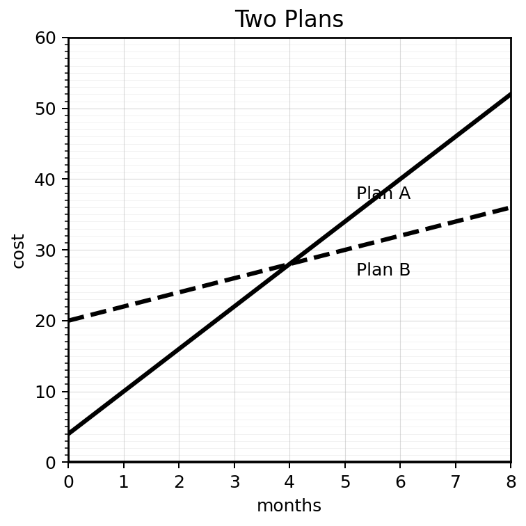